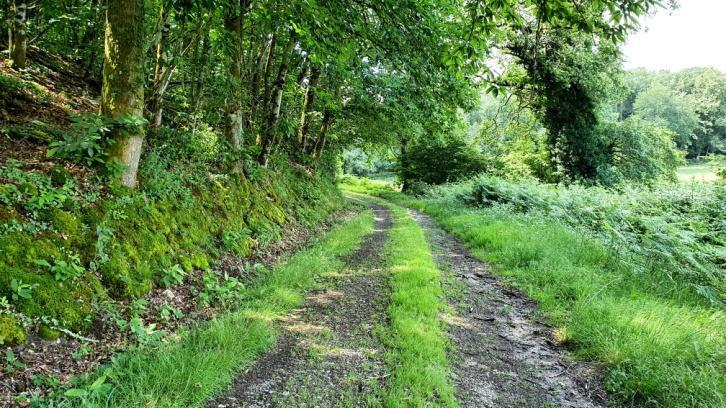
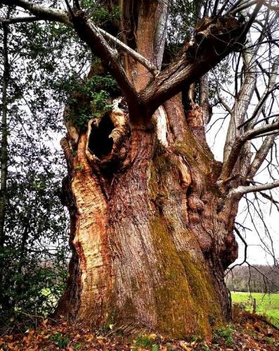
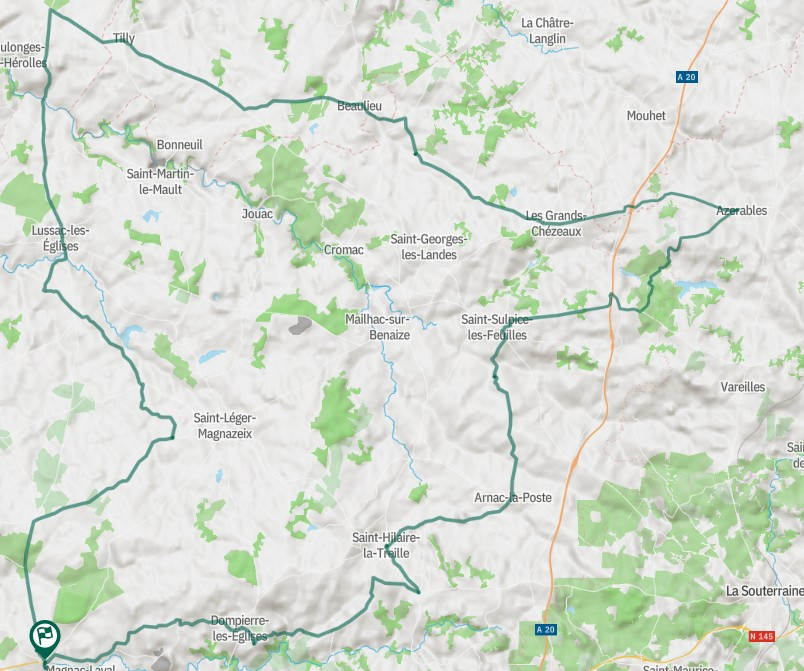
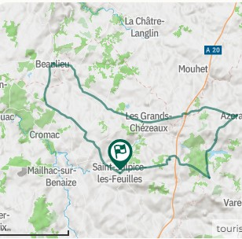
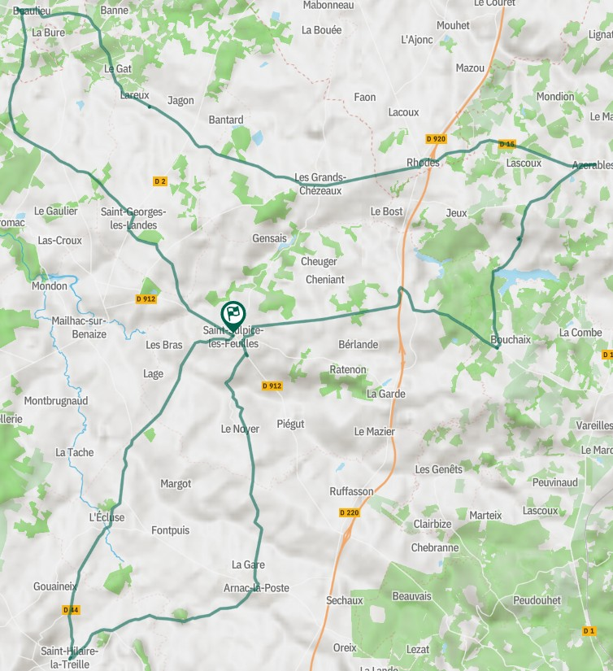
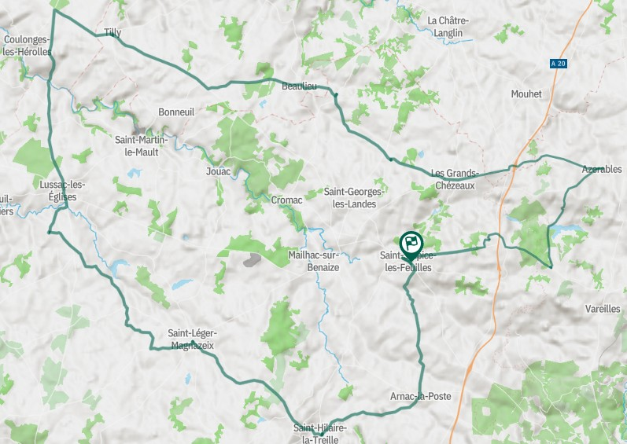
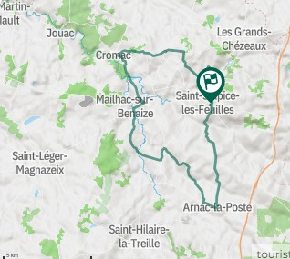

Amoureux de nature et de grands espaces, découvrez les sentiers de randonnée de Saint-Sulpice-les-Feuilles, au cœur du Haut Limousin. Deux circuits balisés vous invitent à parcourir des paysages variés entre étangs, chemins creux, villages de caractère et panoramas sur la campagne limousine.
Vous pouvez aussi trovuer d'autres lieux et randonées sur https://www.visitlimousin.com/.

Le sentier des Oiseaux
Ce circuit d’environ 10 à 12 km se parcourt en près de 3 heures. Accessible au plus grand nombre, il vous conduit jusqu’aux rives de l’étang de Gensais, en traversant des espaces naturels propices à l’observation de la faune et de la flore locales.
Le parcours permet également de découvrir le patrimoine du bourg, notamment son église et son remarquable ange reliquaire du XIIIᵉ siècle.


Le sentier des Ramiers et des Millefeuilles
Avec ses 25 km de parcours, cette randonnée offre une immersion complète dans les paysages du territoire. Durant environ 6 h 30 de marche, les randonneurs traversent chemins bocagers, étangs, cours d'eau et petits hameaux typiques du Limousin.
Le circuit permet également d'admirer le célèbre châtaignier « Petit Jean », âgé de plus de cinq siècles.
Que vous soyez marcheur occasionnel ou randonneur confirmé, ces itinéraires constituent une excellente façon de découvrir les richesses naturelles et patrimoniales de Saint-Sulpice-les-Feuilles.


C3 circuit cyclo autour de Magnac-Laval et Saint-Sulpice-les-Feuilles
- Départ : Magnac-Laval
- Profil de l’itinéraire : Boucle
- Distance : 98.3 km
- Temps : 4h30
- Difficulté : difficile

C7 circuit cyclo autour de Saint-Sulpice-les-Feuilles et Les Grands Chézeaux
- Départ : Saint-Sulpice-les-Feuilles
- Profil de l’itinéraire : Boucle
- Distance : 39.0 km
- Temps : 2h00
- Difficulté : facile

C8 circuit cyclo autour de Saint-Sulpice-les-Feuilles et Arnac-la-Poste
- Départ : Saint-Sulpice-les-Feuilles
- Profil de l’itinéraire : Boucle
- Distance : 60.4 km
- Temps : 3h00
- Difficulté : moyen

C9 circuit cyclo autour de Saint-Sulpice-les-Feuilles et Lussac-les-Eglises
- Départ : Saint-Sulpice-les-Feuilles
- Profil de l’itinéraire : Boucle
- Distance : 80.7 km
- Temps : 3h40
- Difficulté : moyen

C20 circuit cyclo en famille autour de Saint-Sulpice-les-Feuilles et du Lac de Mondon
- Départ : Saint-Sulpice-les-Feuilles
- Profil de l’itinéraire : Boucle
- Distance : 30.2 km
- Temps : 1h30
- Difficulté : facile